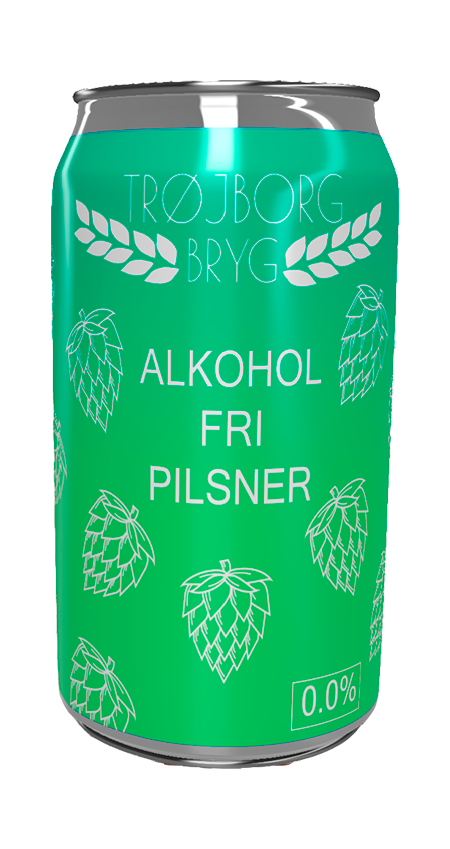
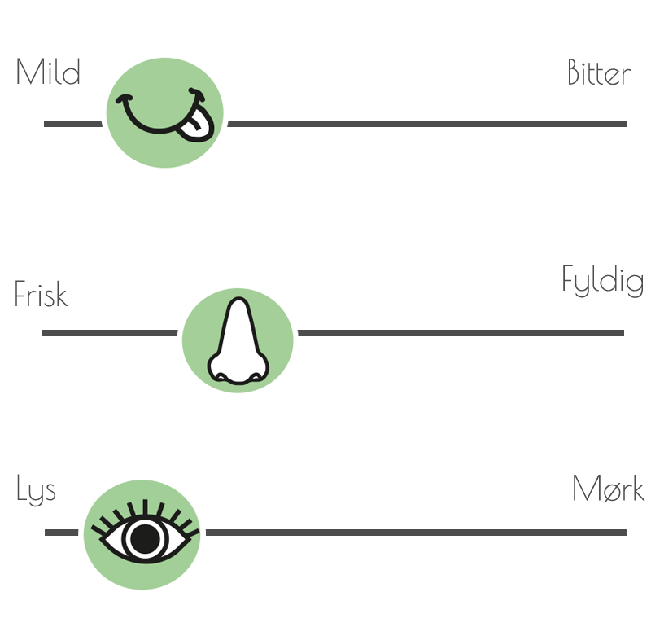

TRØJBORG BRYG 0,0%
TrøjborgBrygs alkoholfri pilsner har en klar gylden farve, med en masse hvidt skum. Den er i al sin enkelthed, lige som en pilsner skal være og bidrager samtidig med en frisk duft af af malt og humle.
